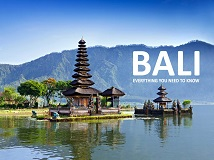

Posting Teratas
WISATA BALI

PANTAI KUTA
Pantai Bali ini adalah pelopor pariwisata di pulau Bali. Sebagai ikon pariwisata Indonesia, pantai Kuta Bali menjadi tempat pertemuan bagi wisatawan dari seluruh dunia termasuk wisatawan lokal. Sebelum menjadi objek wisata, Kuta merupakan sebuah pelabuhan dagang. Di mana produk dari lokal diperdagangkan kepada pembeli dari luar Bali. Pada abad ke-19, Mads Lange, seorang pedagang Denmark, datang ke Bali dan mendirikan basis perdagangan di Kuta. Keahliannya dalam bernegosiasi, membuat Mads Lange sebagai pedagang yang terkenal antara raja-raja Bali dengan Belanda. Hugh Mahbett juga telah menerbitkan sebuah buku berjudul “Praise to Kuta” yang berisi ajakan kepada masyarakat setempat untuk menyiapkan fasilitas akomodasi wisata. Tujuannya untuk mengantisipasi ledakan wisatawan yang berkunjung ke Bali. Buku itu kemudian menginspirasi banyak orang untuk membangun fasilitas wisata seperti penginapan, restoran dan tempat hiburan. Pesona utama dari pantai Kuta adalah wilayahnya yang luas serta pasir putihnya yang bersih. Terletak di sisi barat yang menjadikan pantai ini sebagai tempat yang baik untuk menikmati keindahan matahari saat terbenam. Popularitasnya tidak hanya membuat Pantai Kuta ramai pada waktu tertentu saja, tetapi Kuta penuh sesak hanpir setiap hari selama 24 jam. Banyak kegiatan yang bisa Anda lakukan di sore hari di pantai Kuta, seperti berselancar di pantai Bali, berenang, dan berjemur. Bahkan ada juga yang bermain voli pantai, sepak bola atau hanya duduk bersama teman-teman sembari menikmati pantai dan matahari terbenam yang indah. Dengan pasir putihnya, pantai Bali ini menawarkan wisata liburan yang menyenangkan penuh dengan sukacita. Tidak hanya di pagi dan sore hari, bahkan di malam hari pun pantai Kuta masih terlihat ramai. Tempat yang tidak pernah sepi, itulah kesan ketika Anda mengunjungi daerah ini. Sebagian besar toko-toko dan hotel di sekitar pantai Kuta tidak pernah sepi dengan pengunjung. Disamping keindahannya, Pantai Kuta Bali telah menjadi tempat kejuaraan dunia berselancar, karena didukung oleh ombaknya yang bagus. Pantai ini telah mencuri perhatian peselancar di seluruh dunia. Tidak hanya untuk profesional, ada banyak juga peselancar pemula yang masih belajar untuk menaklukkan ombak pantai kuta. Setelah lelah dalam beraktifitas berselancar, berjemur, atau hanya menonton matahari terbenam, Anda dapat mencoba untuk berkeliling dengan berjalan kaki di sekitar pantai. Ada banyak toko – toko souvenir dengan berbagai bahan dan bentuk disediakan di pantai Kuta, seperti cincin, anting-anting dan berbagai pernak-pernik termasuk pakaian. Jadi, ketika Anda berada di Bali, jangan lupa untuk mengunjungi pantai Kuta ini, bukan liburan lengkap jika Anda tidak mengunjungi Kuta Bali. Tidak peduli waktu, siang atau malam, setiap kali Anda memiliki waktu, Kuta akan selalu terbuka untuk Anda.
Akses
Anda hanya membutuhkan waktu sekitar 10 menit dari Bandara Internasional Ngurah Rai ke Pantai Kuta. Anda dapat pergi ke daerah pantai setiap saat dengan taksi atau kendaraan pribadi. Jika menggunakan bus, biasanya berhenti di Central Parkir Kuta. Dari sini, Anda dapat melanjutkan perjalanan menuju pantai dengan transportasi khusus untuk umum, dengan tarif sekitar Rp. 10.000,-.
Tarif Masuk
Untuk tiket masuk ke pantai Kuta tidak dikenakan biaya masuk. Tetapi jika Anda datang dengan kendaraan pribadi, maka Anda harus membayar biaya parkir sebesar Rp. 5.000,- per kendaraan.
Akomodasi Dan Fasilitas
Pantai Kuta biasanya ramai dengan wisatawan selama musim liburan, yakni bulan Juli – Agustus dan bulan Desember – Januari. Pastikan Anda telah memesan hotel jauh – jauh hari sebelumnya ketika Anda ingin mengunjungi Kuta dalam bulan tersebut. Sebagai tujuan wisata yang sangat terkenal, Kuta memiliki fasilitas akomodasi yang lengkap. Di daerah ini Anda akan dengan mudah menemukan penginapan dari hotel bintang lima, wisma, sampai pondok. Beberapa yang terkenal dekat pantai Kuta yaitu Bali Dynasty Resort, Discovery Kartika Plaza Hotel, Santika Beach Premiere Hotel. Klik di sini untuk menemukan beberapa hotel dekat pantai Kuta. Anda juga dapat dengan mudah menemukan tempat-tempat hiburan seperti kafe, bar, pub, diskotik, ataupun karaoke. Jika Anda ingin berselancar tetapi tidak membawa peralatan berselancar, Anda dapat menyewa papan selancar di berbagai tempat yang tersebar di sekitar pantai. Biaya untuk menyewa peralatan selancar yaitu berkisar antara Rp. 50.000 – Rp. 150.000 per jam. Selain itu, Anda juga akan menerima pelatihan singkat dari instruktur selancar. Untuk menjaga keselamatan wisatawan yang mengunjungi pantai Kuta setidaknya 40 penjaga pantai di siagakan. Mereka tersebar di tiga pos dan dibagi menjadi dua kelompok. Kelompok pertama berjaga sejak pukul 7 pagi sampai 2 siang, sedangkan kelompok berikutnya dari pukul 12 pagi sampai 7 malam. Bagi yang suka berbelanja, tersedia banyak toko-toko souvenir di daerah Kuta yang menjual kerajinan tangan , aksesoris dan beragam pakaian. Juga tersedia supermarket, warung makan, dan restoran yang menyajikan berbagai masakan dengan berbagai rasa. Ada juga restoran cepat saji seperti Mc Donalds yang buka selama 24 jam. Anda dapat menemukan ATM dengan mudah untuk mengambil uang tunai Anda dengan dukungan kartu internasional. Jika Anda memerlukan waktu untuk bersantai, dan ingin melepas penat setelah seharian beraktifitas, ada pemijat yang hanya melenturkan otot-otot Anda dengan biaya sekitar Rp. 50.000,- dengan waktu setengah jam. Ada juga tato non permanen, layanan mewarnai kuku dan rambut di sekitar pantai Kuta. Di Kuta terdapat banyak tempat persewaan kendaraan, seperti mobil, sepeda motor, dan sepeda. Tarif untuk sewa mobi bervariasi tergantung pada jenis kendaraan. Biasanya sekitar Rp. 600.000,- per 24 jam, termasuk sopir dan BBM, atau sekitar Rp. 300.000,- per 24 jam tanpa sopir dan BBM. Untuk sepeda motor denga tarif sewa berkisar antara Rp. 50.000 – 100.000,- per hari. Sementara untuk tarif sewa sepeda berkisar Rp. 30.000,- per hari.